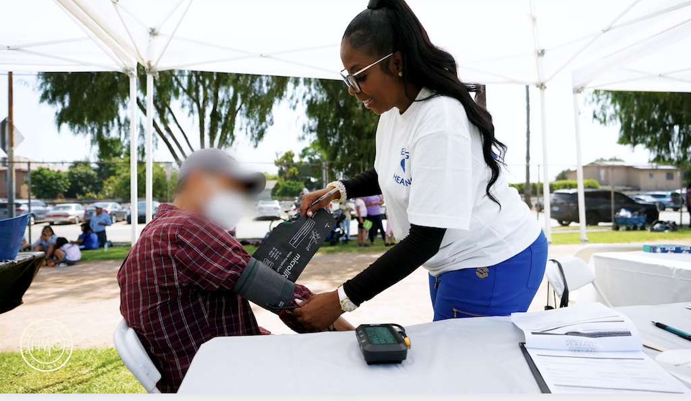
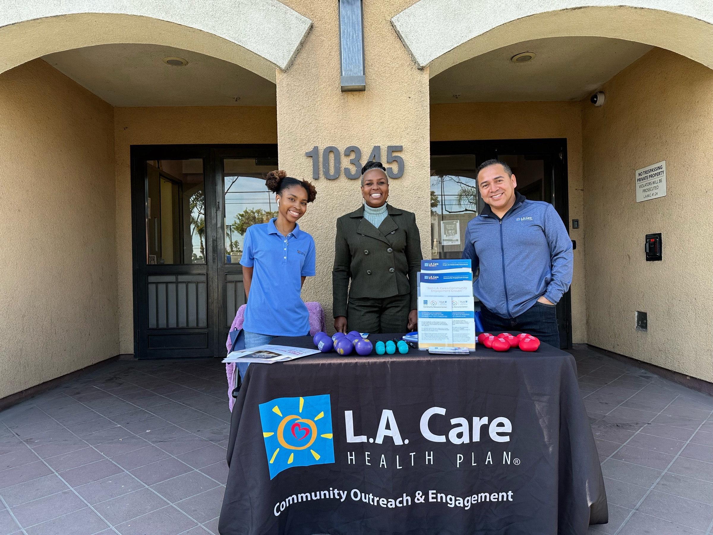

Why we ask
Free is not the same as reachable.
A service can cost nothing and still be out of reach if it sits across town, on a weekday, at an hour someone is working. So we asked.
169 community members answered our community needs and engagement assessment, in English and Spanish. What they said is what decides where we set up, what we bring, and what time we open.

Where we set up
How we decide where to go.
A neighborhood gets on the list two ways. The need is greatest there, or community members and partner organizations asked us to come. What we set up once we arrive is decided by the people who live there.
-
Identify the area
We go to the areas of greatest need, and to the places where community members or partner organizations specifically request us.
-
Ask before we plan
Once a location is identified, we run a community needs assessment there to determine which services are needed most.
-
Deploy what was asked for
The results of that assessment inform and determine which services get deployed at that site.
The 169 responses below came out of step two. Every deployment starts there, with what the people at that site said they needed.
Want us in your neighborhood? Take the Community Health Survey. If you are a neighborhood group or a partner organization, ask us to come out.

What the community told us
Cost, time, and a ride.
Three barriers came back ahead of everything else. All three are answered by where and when a service is delivered, not by explaining the service better.
Named cost as a barrier to getting care. Every Mobile Health Outreach deployment is free at the point of service.
Named time. We set up at hours and events people are already attending, rather than asking them to find a new block of a working day.
Named transportation. A mobile team removes that one outright. We cover the distance instead of asking them to.
Said the support they most need is information about free or low-cost services. The single largest request was not treatment. It was knowing what already exists.
Asked for help understanding how to access services. Knowing a program exists and being able to use it are two different problems, and people named both.
Counts are the people who selected each option, out of 169 respondents. People could select more than one answer and could skip any question, so percentages are of those who answered that question and do not total 100.
How that shapes deployment
People come for the giveaway table.
Free items, food, and something for the children all outranked free screenings. So we plan around that.
An event without giveaways, without food, or without anything for a child to do reaches fewer people. Fewer people means fewer blood pressure readings and fewer referrals. The screening tent is not competing with the giveaway table. It is busy because it stands next to it.
Families arrive together, and a parent sits down for a screening only when the children are occupied within sight. Staffing the family activity is a clinical decision, not an extra.
Why people attended a community event
169 respondents, more than one answer allowed.
What would make someone attend the next one
A separate question. More than one answer allowed.
How the feedback was collected
- Respondents
- 169
- Languages
- English and Spanish
- Format
- Multiple choice, more than one answer allowed on most questions
- Skipping
- Any question could be skipped, so the number answering varies by question
- Reporting
- Counts are exact. Percentages are of those answering that question
- Purpose
- Planning Health Matters Clinic services. Community feedback, not a study
What a deployment includes
What we set up when we arrive.
A screening station, a health education table, and someone whose whole job is helping people work out what to do next. Everything is free, and no insurance or identification is required to sit down.
Screening finds the problem. Navigation is how it gets treated. Running one without the other is how people end up holding a number they do not know what to do with.
Vitals and screening
- Blood pressure
- Blood glucose
- Cholesterol
- Oxygen saturation
Health education
- What your readings mean, explained on the spot
- Materials in English and Spanish
- Mental health and wellness information
- Questions answered without an appointment
Referrals and navigation
- Connection to free and low-cost services
- Help understanding how to access them, the second most requested support
- Referral into HMC programs and partner services
- Follow-up information to take home
A deployment is a screening and navigation service, not a replacement for a primary care relationship. When a reading needs a clinician, the point of the visit is getting you to one.
How people want to hear from us
A phone in a hand, and someone standing in front of you.
Phone or text was the most common way people wanted to hear from us, then in person at the event itself. Almost everyone said they would use a digital tool to find free services.
Prefer phone or text
37.9% chose phone or text as how they want to get information, ahead of every other channel.
Prefer in person
31.7% want to hear it at the event itself. That is why the education table is staffed.
Very likely to use a digital tool
75.5% said very likely and a further 29 people, 19.2%, said somewhat likely.
Want updates from us
84.7% said yes to receiving digital updates about services and events.
What the 61 asked us to send.
The people who chose phone or text are not asking for a newsletter. They are asking for the name of something free and the steps to use it.
The Event Finder does that. Every HMC event, searchable on a phone, no account needed.
Requested by those preferring phone or text
Counts among the 61 people who chose phone or text. More than one answer allowed.
Operating history
Every year since 2020.
Health Matters Clinic has delivered community health services without a gap since July 2020, starting with monthly clinics run outdoors through the first year of COVID.
The entries that carry the most weight sit on someone else's record as well as ours. Cal OES, the UCLA Institutional Review Board, the Los Angeles County Department of Mental Health, the Los Angeles County Department of Public Health, CalMHSA, L.A. Care and the Los Angeles Business Journal can all be asked. Each year below names what was delivered and who it was delivered with.
-
2020
Monthly community clinics, held outdoors
Monthly community clinics from July 2020 onward, run outdoors through the first year of COVID.
Each clinic carried a full multidisciplinary service list rather than a single screening: COVID-19 testing, HIV testing, mental health screening, blood pressure, glucose, cholesterol, height, weight and BMI, physical therapy, yoga, breathwork, dermatology, wound care, and food distribution to people experiencing homelessness. Art therapy was added in the autumn.
-
2021
Institutions start working the events with us
Los Angeles County Housing for Health, the Los Angeles County Department of Public Health, the NAACP, CORE Response and JWCH Institute all joined the work this year. An organization that had spent its first year proving it could run a clinic outdoors now had county agencies and national organizations willing to put their own names on the day.
That set the pattern HMC still runs on. Events are built with partners rather than alone, and the roster of partners and event collaborators has since grown past 200 organizations.
County and community partners -
2022
A curriculum of our own, and a name in the trade press
HMC wrote and launched its youth STEAM curriculum, which turned school visits into a program with a syllabus behind it. The same year the work reached further into schools and into the Los Angeles County Department of Mental Health.
L.A. Care sponsored a community health event in Compton delivering free biometric, dental and vision screenings, with more than 15 community-based organizations and 40 volunteers working it.
Stephanie Chang, Secretary of Health Matters Clinic, was nominated for the Los Angeles Business Journal 2022 Health Care Leadership Awards. HMC holds the nomination letter.
L.A. Care, LACDMH and the Los Angeles Business Journal -
2023
The calendar fills, and the school work becomes a habit
Events ran in every quarter of the year and in every setting HMC works, at schools, in parks, at housing developments and on the street. Students at 107th Street Elementary and STEAM Magnet were seen again and again across the spring rather than once, with further work at Morningside High School, Franklin D. Middle School and Ingenium.
Street medicine settled into a monthly rhythm, with a training program in September followed by outreach in October, November and December. Events that year were run with LACDMH, the Housing Authority of the City of Los Angeles, Neighborhood Youth Achievers, Mentors Inc and WIN LA, among others.
HMC also sat in the Cal OES Regional Disaster Ready Summit for Los Angeles County on September 27, 2023, at the Skirball Cultural Center, which is where a community organization gets counted as part of regional response rather than an audience for it.
Cal OES -
2024
Testing, coverage and contracted work
HMC launched HIV testing with the Los Angeles County Department of Public Health, Division of HIV and STD Programs, under its Ending the HIV Epidemic work. A result now arrives while the person is still standing at the table, which is the difference between a referral and an answer.
OraQuick HIV self-test distribution ran in Skid Row from January to August 2024 and reached 115 recipients.
L.A. Care partnered with HMC on health insurance enrollment support, so that people leaving a screening station with a referral had a way to pay for the appointment at the end of it. HMC was also contracted to deliver Take Action LA, and authored and won the largest grant award in its history to that point.
The Black Equity Breakfast brought Los Angeles County stakeholders and community members into one room as a listening and planning session on how to serve LA's Black communities better.
L.A. Care and LA County DPH -
2025
A wildfire, a published study, and a county contract
HMC ran its L.A. Wildfire Relief Response on January 18, 2025, standing up a relief operation with the partner network it had spent four years building instead of assembling one under pressure.
In February HMC published "Understanding Healthcare Access and Experiences in Skid Row, Los Angeles", a study of 75 respondents certified exempt from review by the UCLA Institutional Review Board. It gave the organization its own data to argue from rather than anecdote.
Unstoppable launched under a contract with the Los Angeles County Department of Mental Health, which moved HMC's own curriculum into county-funded delivery.
UCLA IRB and LACDMH -
2026
Named in a state award, and running on software we built
HMC was named in the CalMHSA Intent to Award for the Los Angeles County Department of Mental Health Community Grants, through a competitive RFP. On February 27, 2026 LACDMH approved Unstoppable for 1.0 CE/CEU across BBS, BRN, CCAPP and psychology, so the training now lands on licensed clinicians' continuing education records, and Unstoppable programming expanded on the back of it.
HMC OS went live, the software the organization runs on rather than a product it sells. The Event Finder puts every HMC event on a phone with no account required. A new volunteer system carries registration, training and each volunteer's record, which is what makes a field team auditable.
The volunteer roster passed 1,000 people registered to date, counted cumulatively since 2020 rather than active in any single year.
CalMHSA and LACDMH
Join the work
The teams are volunteers.
A deployment needs people at the screening station, at the education table, at the sign-in table, and with the families. Clinical and non-clinical roles both matter, and both are trained before anyone works an event.
Become a volunteer
Every HMC volunteer completes core volunteer training before working with the community. Training and hours are tracked in your volunteer record.
- Screening support alongside clinical staff
- Health education and navigation roles
- Recurring deployments, not one-off shifts
Take the tour
New to HMC and not ready to sign up? The tour walks you through how volunteering works, what the training covers, and what a shift actually asks of you, before you commit to anything.
Donate
A donation pays for screening supplies, education materials in two languages, and the food and family activities that fill a site. That last part is not decoration. It is what gets people through the gate.
Bring us to your site
Schools, churches, housing sites, and community organizations can request a Mobile Health Outreach deployment, ask us to table at an event you are already running, or start a wider partnership. Tell us the neighborhood, the date, and roughly how many people you expect, and we will tell you what we can bring.
Tell us what you need
Host a deployment, have us table at something you are already running, or start a wider partnership. We reply to every request.
Prefer to write or call? contact@healthmatters.clinic · (323) 990-4325. Deployment and partnership questions can also go straight to partner@healthmatters.clinic.